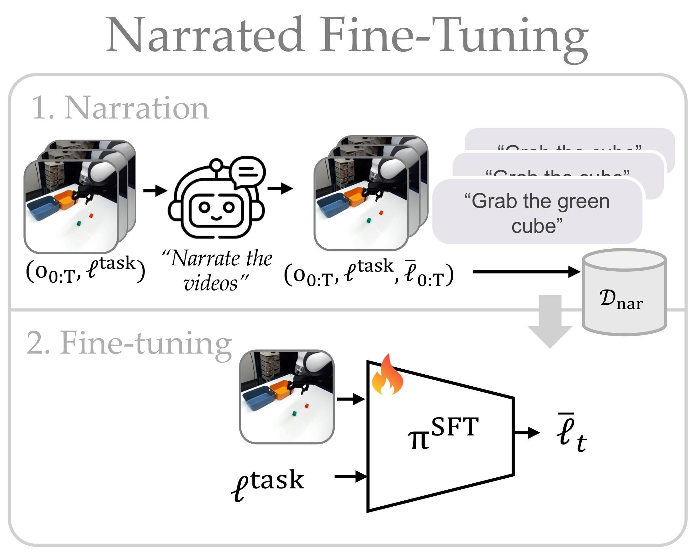

Overview
Vision-Language-Action (VLA) models let natural language serve as a flexible test-time interface to robot control. Language is appealing because it operates at a higher level of abstraction than low-level motor commands: if a frozen VLA already contains useful low-level skills, changing the language input can elicit and compose those skills without overwriting the underlying action policy. In principle, this yields better sample complexity and out-of-distribution generalization than directly fine-tuning the VLA.
In practice, though, a VLA's language-to-action mapping is often brittle and unintuitive: semantically similar instructions can induce drastically different behaviors, the open-vocabulary search space is combinatorially large, and some behaviors may not be steerable at all. We propose a framework that interactively searches for language sequences that improve closed-loop VLA performance, distills them into a test-time language feedback policy (LFP), and learns an improvement head that predicts when steering will help. We then conformalize the improvement head so the LFP steers only when it is reliable and otherwise falls back to the base instruction. Operating on arbitrary frozen VLAs — with no access to the original training data and no fine-tuning of the model — our conformalized LFP improves base VLA performance by 24.7% in simulation and 65.0% on hardware, with strong harmlessness guarantees under visual and semantic perturbations.
Method
We instantiate our approach in three phases. Use the tabs to step through each one.

Results
We evaluate in simulation (LIBERO-OOD) and on hardware (Franka Emika), asking: (Q1) how does language steering compare to the base VLA and direct VLA fine-tuning in in-distribution performance, out-of-distribution robustness, and sample complexity? (Q2) can conformal calibration prevent harmful steering? (Q3) is closed-loop feedback necessary, or is open-loop prompt search enough? Our LFP πRFT (with refusal) and its calibrated variant πCP are compared against the base VLA (πVLA), direct VLA fine-tuning (πVLA-SFT), the off-the-shelf VLM (πBase), and the narrated SFT policy (πSFT). Hover any point or bar for its value ± standard error.
Qualitative Hardware Rollouts
Each pair shows base VLA failure (left) and language steered VLA success (right) for the selected hardware task and perturbation. Choose a task, then a perturbation condition.
Closed-Loop Recovery
Closed-loop steering provides robustness to adversarial mid-task perturbations. After the robot correctly places the green cube, a person moves it back into the scene. The base VLA continues from the original instruction and misplaces the cube, while πRFT observes the changed state, emits an updated language action ℓt (“Put the green block in the blue bin”), and steers the frozen VLA to recover — a behavior not seen with open-loop prompting. (Playback 2×.)
Simulation (LIBERO-OOD)
In simulation we steer a π0.5 VLA fine-tuned on LIBERO. We report mean success rate with standard error, pooled over 200 visual×semantic perturbation combinations.
Baselines — training vs. deployment success rate
On-Policy Rollout Usage
Novel Behavior Composition
Hardware (Franka Emika)
On hardware we steer a π0.5 VLA zero-shot (no fine-tuning) across four tabletop tasks and two novel tasks, each with visual (VOOD) and semantic (SOOD) perturbations. Select a task:
CubeSort
When (Not) to Steer: Calibrated Refusal
Refusal is not only a safety mechanism — it also improves task performance by steering selectively. Conformal calibration controls the rate of harmful steering at a chosen target α.
Refusal improves success while cutting harmful steering
Calibration tracks the target false-positive rate
| Setting | Method | Accuracy ↑ | TPR ↑ | FPR ↓ | TNR ↑ | FNR ↓ | Refusal Rate |
|---|---|---|---|---|---|---|---|
| Simulation | πRFT | 66.22% | 70.18% | 38.92% | 61.08% | 29.82% | 43.42% |
| πCP | 77.74% | 67.77% | 9.31% | 90.69% | 32.23% | 57.66% | |
| Hardware | πRFT | 84.72% | 100.00% | 61.11% | 38.89% | 0.00% | 9.72% |
| πCP | 99.17% | 99.63% | 2.22% | 97.78% | 0.37% | 24.72% |
| Search | Success Rate (%) | Refusal (%) |
|---|---|---|
| Open-loop (static prompt edit) | 71.3 ± 0.5 | 43.5 |
| Closed-loop, phrase-level | 70.4 ± 0.5 | 45.9 |
| Closed-loop, trajectory-level (Ours) | 75.0 ± 0.4 | 43.4 |